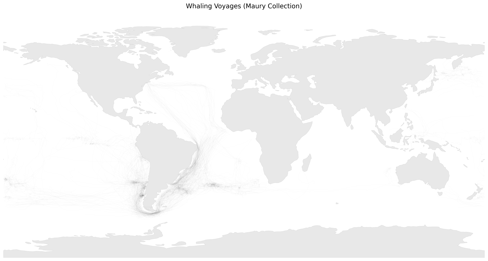
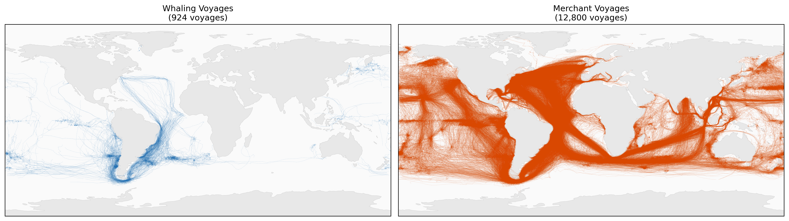

Mapping the Maury Collection
Reconstructing Ben Schmidt’s Historical Whaling Voyage Analysis

About This Project
I’ve been teaching with Ben Schmidt’s classic digital history blog series on mapping whaling voyages for well over a decade. They provide arresting visuals of the history of American whaling voyages alongside a series of interesting methodological reflections on how to use quantitative data effectively in historical practice. However, they were written in a moment when sharing code and data was harder than it is today, and the lack of those artifacts has limited how students can engage with the material.
As we move into the second quarter of the twenty-first century, data has generally become easier to find, code has become easier to share, and new data formats have made it easier to perform calculations that were prohibitively difficult 14 years ago.
The project you are reading attempts attempts to reconstruct Schmidt’s full pipeline, using modern Python libraries that can run on a well-provisioned laptop. In a series of discrete steps, we:
- locate the dataset in its current location
- extract the relevant records using the method that Schmidt describes
- take advantage of major advances in data storage & rewrite the dataset to Parquet format
- explore Schmidt’s method for classifying voyages, as well as some alternative methods
- mimic his static visualizations, and
- use modern open source mapping tools to imitate the complex voyage animations which made the blog so popular a decade and a half ago
- TODO: I also hope to discuss and implement some enhancements to Schmidt’s work, when I get the time.
The project can be read here, on the web, but it’s also possible to run all of the code locally as a set of Jupyter notebooks. I hope the multiple formats help you engage with the project in different ways: passively reading for those with less time or technical skill, active tinkering for those with more.
Either way, by following along you’ll learn to:
- Download raw logbook data from NOAA’s ICOADS archive
- Parse the cryptic IMMA1 fixed-width format into modern data structures
- Reconstruct individual ship voyages from scattered observations
- Classify voyages as whaling or merchant ships using machine learning
- Visualize the results with animated “ghost ship” maps
Before you begin, you should read through Schmidt’s whole series of posts. A suggested order is:
- Reading digital sources: a case study in ship’s logs, an overview of the whole project.
- Data Narratives and Structural History, an introduction to the main arguments about how to do history with data
- You can probably skip Melville Plots, though if you’re interested in Melville for other reasons this post has a few good tidbits,
- Machine learning at sea, the most direct discussion of his classification technique,
- When you have a MALLET, a critique of topic modelling,
- Where are the individuals, a metahistorical reflection, and finally
- Reading Digital Sources, a synopsis of the series.
We won’t address all the questions he raises in the series, but his reflections will help make sense of the steps we’re taking.
The Data: Maury Collection (ICOADS Deck 701)
Matthew Fontaine Maury (1806-1873) was something of a data pioneer, and generally thought of as a founder of oceanography. For almost twenty years, he systematically collecting ship logbooks from captains worldwide. His synthesis of thousands of voyages created the first wind and current charts, with numerous practical benefits for sailors, and scientific benefits for future generations of oceanographers and climate scientists.
The Maury Collection contains approximately 1.3 million observations from over 13,700 voyages between 1795 and 1861. Each observation records:
- Position: Latitude and longitude
- Date/Time: Year, month, day, hour
- Weather: Wind direction/speed, barometric pressure, air/sea temperature
- Ship identity: Partial ship names, voyage identifiers
As Schmidt notes, the original hand-written logs were much more complex than the records that survive today. We’ll talk more about that in the next section.
The next notebook in our series deviates from Schidt’s discussion in order to make further work go much faster.
The Challenge: Identifying Whaling Ships
The logbooks don’t explicitly label ship types. However, different ships have distinctive spatial signatures:


Whaling ships spent months hunting in remote Pacific waters, while merchant ships followed direct trade routes between ports. By training a classifier on known whaling grounds, we can automatically identify the ~900 whaling voyages hidden in the data.
Schmidt used a k-nearest neighbour algorithm for his classficiation; we proproduce that in the following notebook.
Results: Animated Voyage Maps
The ultimate goal is to create visualizations like Ben Schmidt’s famous animated maps showing ships moving across the oceans over decades: